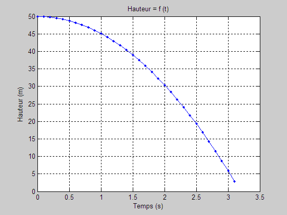

ForTour.m
Pour définir le nombre de cycles de boucle for, il faut connaître le temps nécessaire pour parcourir 50 m en chute libre (ou bricoler un peu).
h = 0.5*g*t^2
clear; clc; close all g = 9.81; % m/s^2, accélération gravitationnelle h0 = 50; % m % t = sqrt(50/g/0.5) = 3.19 sec, % ce qui implique 31 cycles de 0.1 s + le zéro. t = zeros(1,32); h = zeros(1,32); % pseudodéclaration for i = 1:32 t(i)= (i-1)*0.1; % s h(i) = h0 - 0.5*g*t(i)^2; end plot(t,h,'.-b'); grid on; xlabel('Temps (s)'); ylabel('Hauteur (m)'); title('Hauteur = f (t)');
